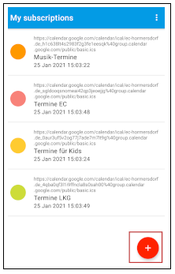
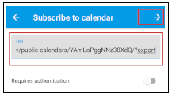
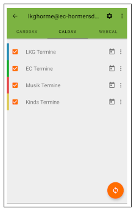

Wenn ein Google Account genutzt wird, muss nur der jeweilige Kalenderlink abonniert werden,
dazu bei Google Kalender unter Einstellungen die Option “Kalender hinzufügen” -> "per URL"
auswählen:
Die einzelnen Links für die Kalender sind folgende:
Einfach den Link bei der URL eintragen und hinzufügen klicken. Danach kann der Name des Kalenders noch
beliebig geändert werden:
Wenn kein Google Kalender (o.ä.) verwendet wird, kann man den Kalender über icsx5 abonnieren, dazu die icsx5 App herunterladen (kostet einmalig 2€):
ICSx5 DownlodlinkDann können die gewünschten Kalender hinugefügt werden, nachfolgender Link beinhaltet alle Kalender:
Alle KalenderDurch das anklicken der 3 Punkte, und darauffolgender Auswahl den Link zu kopieren erhält man den jeweiligen Abonnierlink zum entsprechenden Kalender:
Dieser Link kann dann in der icsx5 App über den '+' Button hinzugefügt werden
Dann nur den kopierten Link einfügen und rechts oben den Pfeil drücken
Jetzt kann der Kalender in einer beliebigen Kalender-App angezeigt werden (meist unter Einstellungen/andere Kalender):
Dieser Bereich ist nur für die interessant, die Termine ändern müssen!
Davx5 muss auf dem Handy installiert werden (kostet einmalig 5 €):
DAVx5 DownlodlinkDort dann auf das “+” für einen neuen Account klicken und “Login mit URL und Nutzernamen”
auswählen.
Als Basis URL folgende benutzen:
Den Nutzernamen und das Passwort eingeben, nach dem Login können die Kalender ausgewählt werden auf die man Zugriff hat und diese sind dann in jedem beliebigen Kalenderprogramm verwendbar und editierbar. (z.B. TimeTree o.ä.)
Gehe in der Webseite auf die Kalenderübersicht und kopiere den Link